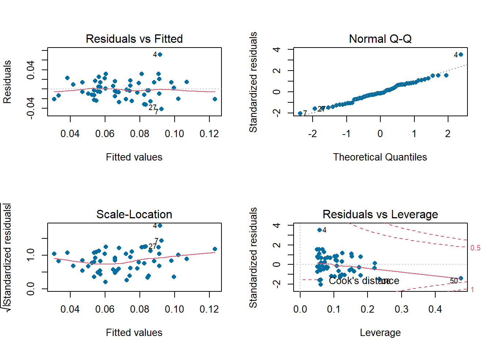
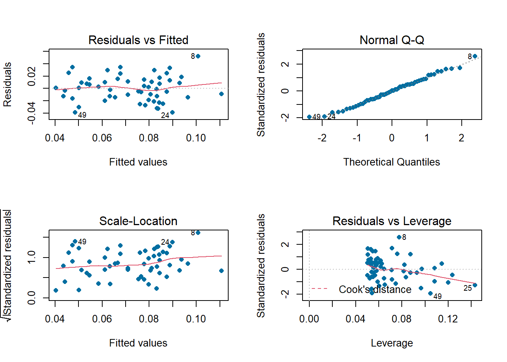
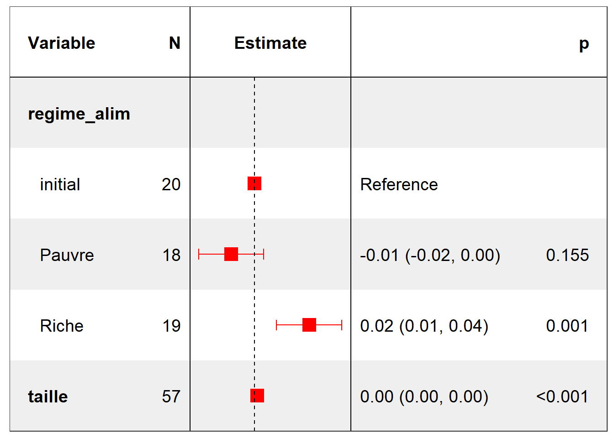

Chapitre 3
Nous allons utiliser un modèle linéaire avec variables qualitatives en mettant en exergue l’interraction car nous avons à la fois un prédicteur continu et un prédicteur catégoriel. Étant donné que les pentes semblent être différentes pour au moins deux des régimes d’alimentation, construisons un modèle qui permet des interactions bidirectionnelles. Spécifier une formule R avec nos variables de cette manière : Formule du modele et package
3.1 Exploration des estimateurs du modèle


Affichons ces résultats sous forme de tiddy format:

Faisons une simulation en prédisant la largeur pour un oursin ayant une taille de 2O ml ayant à l’état initial un régime alimentaire initial,pauvre ou riche
Voici quelques prévisions pour ce genre d’oursin
Voici quelques prévisions pour ce genre d’oursin
Visualisons les différences par un graphique de type dotcharts

